Design & makeovers
Tailor-made garden designs for contemporary and traditional spaces, with overhead plans or detailed colour drawings when required.
Landscape gardeners in Banbury, Oxfordshire
Professional garden design, hard landscaping and soft landscaping services from a local team with more than two decades of experience.
The complete landscape gardening service
Whether your project is big or small, contemporary or traditional, you can rely on GD Landscapes to provide a cost-effective, creative and professional job every time.
The team creates beautiful gardens and features including patios, pathways, decking, driveways, stonework, fencing and wooden structures.
What we provide
Tailor-made garden designs for contemporary and traditional spaces, with overhead plans or detailed colour drawings when required.
Paving, patios, pathways, decking, driveways, gates, fencing, stonework, pergolas and wooden structures.
Planting schemes, turfing, artificial lawns, water features, ponds, garden buildings, hot tubs and outdoor kitchens.
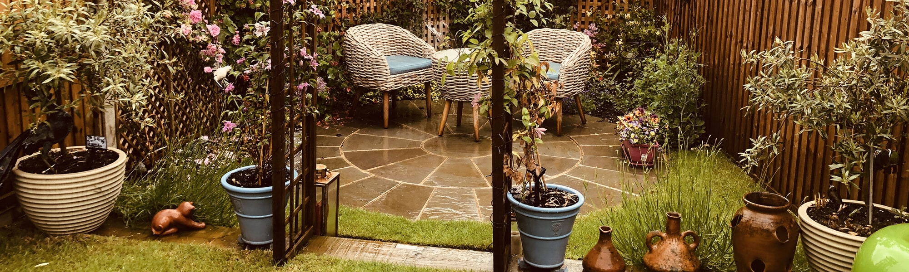
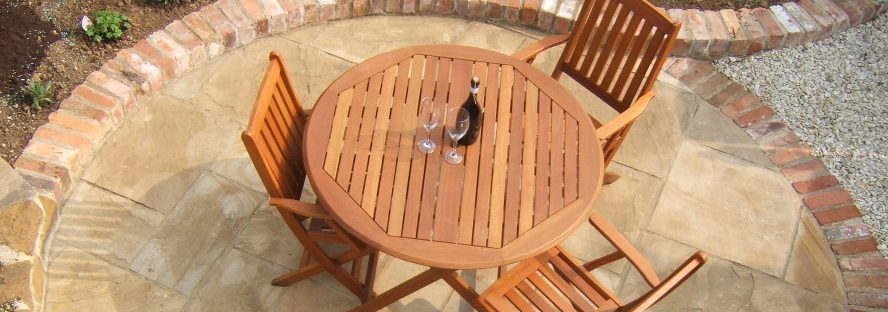
About GD Landscapes
GD Landscapes has been providing a professional landscape service in Banbury, Oxfordshire for the past two decades and has established itself as one of the finest design and landscape companies in the area.
The team works closely with clients from start to finish to achieve high standards and beautiful gardens, combining skilled hard landscaping with considered planting schemes.
Portfolio
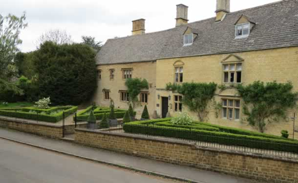
Formal gardens Clean lines, structure and clipped planting.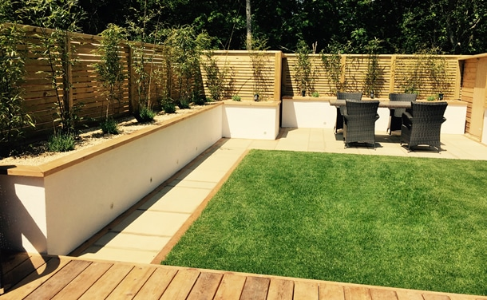
Contemporary Low-maintenance lawns and raised beds.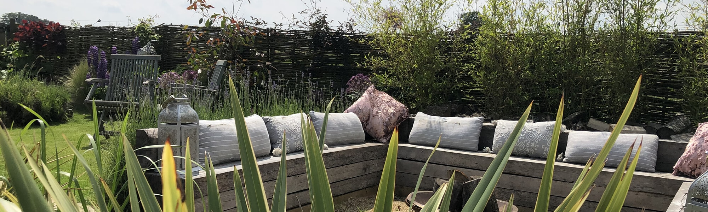
Outdoor living Seating areas shaped for everyday use. Paving detail Stone, levels and crisp edges.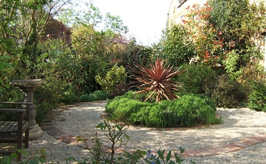
Planting Soft borders and natural movement.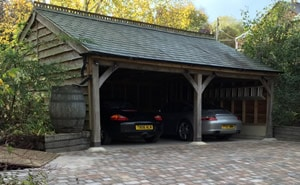
Garden structures Timber buildings, driveways and features.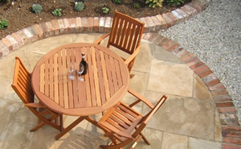
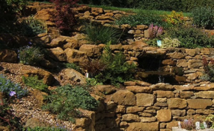
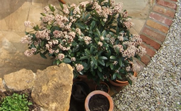
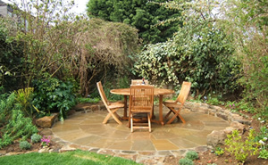
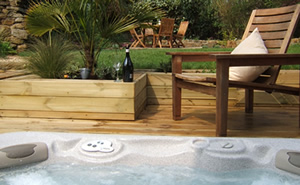
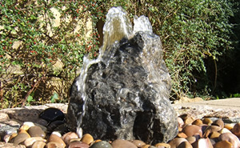
Testimonials
Thank you for giving us a garden better than we could have ever imagined.
Thank you for providing a friendly, honest and hard working approach to the project.
I am delighted with the design and work carried out by Garden Designs.
It is a dream!
Free no-obligation quotation
GD Landscapes offers a free initial consultation within a ten-mile radius of Banbury and can supply a detailed quotation for your project.